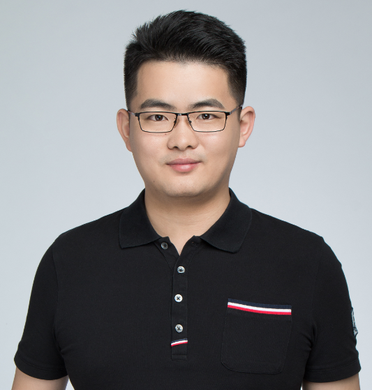

|
Hao Chen
Postdoctoral Researcher
Dept. of Computer Science and Engineering
Ho Sin-Hang Engineering Building
OShatin, N.T., Hong Kong, China
Email: jackie.haochen [at] gmail.com
|

|
Biography
I have finished my PhD study in the Department of Computer Science and Engineering, The Chinese University of Hong Kong (CUHK), supervised by Prof. Heng and Prof. Jack C. Y. Cheng. Previously, I received the B.Eng. in School of Information Engineering from Beihang University (BUAA).
Education
2013–2017, PhD Student in Department of Computer Science and Engineering, The Chinese University of Hong Kong.
2009–2013, Bachelor of Engineering in School of Information Engineering, Beihang University (BUAA), China.
Research Interests
Medical Image Computing, Deep Learning, Computational Pathology, etc.
Awards
10/2019 MICCAI Young Scientist Impact Award, Shenzhen, China
08/2018 CUHK Faculty of Engineering Outstanding Thesis Award
09/2016 2016 MIAR Best Paper Award, Switzerland
10/2016 2016 International Doctoral Forum Best Paper Award, Hong Kong
12/2015 AAAI 2016 Scholarship, Phoenix, Arizona, USA
06/2015 Student Travel Award in MICCAI 2015, Munich, Germany
03/2013 Hong Kong PhD Fellowship (185 awardees)
12/2012 Honorable Gold Medal, Beihang University (10 awardees)
2010-2012 National Scholarship of China
Selected Publications [Google Scholar]
Peer-review Conferences
-
IRNet: Instance Relation Network for Overlapping Cervical Cell Segmentation.
Yanning Zhou, Hao Chen, Jiaqi Xu, Qi Dou, Pheng-Ann Heng.
International Conference on Medical Image Computing and Computer Assisted Intervention (MICCAI 2019). Shenzhen, China.
-
Unifying Structure Analysis and Surrogate-driven Function Regression for Glaucoma OCT Image Screening.
Xi Wang, Hao Chen, Luyang Luo, An-ran Ran, Poemen P Chan, Clement C Tham, Carol Y Cheung, Pheng-Ann Heng.
International Conference on Medical Image Computing and Computer Assisted Intervention (MICCAI 2019). Shenzhen, China.
-
Iterative Multi-domain Regularized Deep Learning for Anatomical Structure Detection and Segmentation from Ultrasound Images.
Hao Chen, Yefeng Zheng, Jin-Hyeong Park, Pheng-Ann Heng, S. Kevin Zhou.
International Conference on Medical Image Computing and Computer Assisted Intervention (MICCAI 2016). Athens, Greece.
-
3D Deeply Supervised Network for Volumetric Liver Segmentation from CT Images.
Qi Dou, Hao Chen, Yueming Jin, Lequan Yu, Jing Qin, Pheng-Ann Heng.
International Conference on Medical Image Computing and Computer Assisted Intervention (MICCAI 2016), Athens, Greece.
-
3D Fully Convolutional Networks for Intervertebral Disc Localization and Segmentation.
Hao Chen*, Qi Dou*, Pheng-Ann Heng, et al.
International Conference on Medical Imaging and Augmented Reality (MIAR 2016), Switzerland. [Best Paper Award in Medical Image Computing]
-
DCAN: Deep Contour-Aware Networks for Accurate Gland Segmentation.
Hao Chen, Xiaojuan Qi, Lequan Yu, Pheng-Ann Heng.
IEEE Computer Vision and Pattern Recognition (CVPR 2016), Las Vegas, USA. [Project]
-
Mitosis Detection in Breast Cancer Histology Images via Deep Cascaded Networks.
Hao Chen, Qi Dou, et al.
The Thirtieth AAAI Conference on Artificial Intelligence (AAAI 2016), Pheonix, USA (oral).
[Project]
-
Deep Contextual Networks for Neuronal Structure Segmentation.
Hao Chen*, Xiaojuan Qi*, et al.
The Thirtieth AAAI Conference on Artificial Intelligence (AAAI 2016), Pheonix, USA (oral).
[Project]
-
Cewu Lu, Yongyi Liu, Hao Chen, Chi-Keung Tang.
International Conference on Computer Vision (ICCV 2015), Santiago, Chile.
-
Automatic Fetal Ultrasound Standard Plane Detection Using Knowledge Transferred Recurrent Neural Networks.
Hao Chen, Qi Dou, et al.
International Conference on Medical Image Computing and Computer Assisted Intervention (MICCAI 2015), Munich, Germany.
[Project]
Peer-review Journals
-
Weakly Supervised Deep Learning for Whole Slide Lung Cancer Image Analysis.
Xi Wang, Hao Chen, Caixia Gan, Huangjing Lin, Qi Dou, Efstratios Tsougenis, Qitao Huang, Muyan Cai, Pheng-Ann Heng.
IEEE transactions on cybernetics, 2019
-
MILD-Net: Minimal information loss dilated network for gland instance segmentation in colon histology images.
Simon Graham, Hao Chen, Jevgenij Gamper, Qi Dou, Pheng-Ann Heng, David Snead, Yee Wah Tsang, Nasir Rajpoot.
Medical Image Analysis (MIA), 2019
-
Fast scannet: fast and dense analysis of multi-gigapixel whole-slide images for cancer metastasis detection.
Huangjing Lin, Hao Chen, Simon Graham, Qi Dou, Nasir Rajpoot, Pheng-Ann Heng.
IEEE transactions on medical imaging, 2019
-
H-DenseUNet: hybrid densely connected UNet for liver and tumor segmentation from CT volumes.
Xiaomeng Li, Hao Chen, Xiaojuan Qi, Qi Dou, Chi-Wing Fu, Pheng-Ann Heng.
IEEE transactions on medical imaging, 2018.
-
VoxResNet: Deep voxelwise residual networks for brain segmentation from 3D MR images.
Hao Chen, Qi Dou, Lequan Yu, Jing Qin, Pheng-Ann Heng
NeuraoImage, 2018.
-
DCAN: Deep contour-aware networks for object instance segmentation from histology images.
Hao Chen, Pheng-Ann Heng. et al.
Medical Image Analysis (MIA), 2017.
-
Automated Melanoma Recognition in Dermoscopy Images via Very Deep Residual Networks.
Lequan Yu, Hao Chen, Qi Dou, Jing Qin, Pheng-Ann Heng.
IEEE Transactions on Medical Imaging (TMI), 2017.
[Project]
-
Automatic Detection of Cerebral Microbleeds from MR Images via 3D Convolutional Neural Networks.
Qi Dou*, Hao Chen*, Lequan Yu, Jing Qin, Lin Shi, Pheng Ann Heng, et al.
IEEE Transactions on Medical Imaging (TMI), 2016.
[Project]
-
Multi-level Contextual 3D CNNs for False Positive Reduction in Pulmonary Nodule Detection.
Qi Dou, Hao Chen, Lequan Yu, Jing Qin, Pheng Ann Heng.
IEEE Transactions on Biomedical Engineering (TBME), 2016.
-
Standard Plane Localization in Fetal Ultrasound via Domain Transferred Deep Neural Networks.
Hao Chen, Dong Ni, et al.
IEEE Journal of Biomedical and Health Informatics (J-BHI), 2015.
Book Chapters
-
Deep multilevel contextual networks for biomedical image segmentation.
Hao Chen, Qi Dou, Xiaojuan Qi, Jie-Zhi Cheng, Pheng-Ann Heng.
Handbook of Medical Image Computing and Computer Assisted Intervention, 2020
-
Automatic lesion detection with three-dimensional convolutional neural networks.
Qi Dou, Hao Chen, Jing Qin, Pheng-Ann Heng.
Biomedical Information Technology, 2020
-
Deep Cascaded Networks for Sparsely Distributed Object Detection from Medical Images.
Hao Chen, Qi Dou, et al.
Deep Learning for Medical Image Analysis (editors: Kevin Zhou, Hayit Greenspan, Dinggang Shen), 2016.
Selected Challenges
◎2016/10 Winner on the MICCAI 2016 M2CAI Challenge on Surgical Workflow Recognition*New*
◎2016/10 Winner on the MICCAI 2016 Automatic Intervertebral Disc Localization and Segmentation from 3D Multi-modality MR (M3) Images
◎2016/10 New state-of-the-art record was set from our team on Cancer Metastasis Detection in Lymph Node
◎2016/10 CU_DL with 3D Deep Learning method placed 1st on MICCAI 2013 Brain Segmentation from MR Images (June 2016) [Results
◎2016/06 CU_DL with 3D Deep Learning method placed 1st on MICCAI 2013 Brain Segmentation from MR Images [Results
◎2016/05 CUMedVision won the 1st place in 2016 ISBI LUNA (lung nodule detection from CT images) Challenge. [Results
◎2016/05 CUMedVision won the 1st place in 2016 ISBI Skin Lesion Classification Challenge out of 20+ teams. [Results
◎2015/10 2015 MICCAI Gland Segmentation Challenge. Our team (CUMedVision) won the 1st place out of 13 teams. [Results] [NVIDIA news]
◎2015/10 2015 MICCAI Nuclei Segmentation Challenge in Pathology Images. Our team (CUMedVision) won the 1st place. [Results]
◎2015/10 2015 MICCAI Endoscopic Vision Challenge. Our team (CUMedVision) won the 1st place on Polyp Detection from videos in terms of overall F1 score and detection latency. [Awards_F1][Awards_Latency]
◎2015/10 2015 MICCAI Intervertebral Disc (IVD) Localization Challenge. Our team (CUMedVision) won the 1st place on IVD localization from 3D MRI data. [Results] [Awards]
◎2015/10 2012 ISBI Challenge: Segmentation of neuronal structures in Electron Microscopy (EM) stacks. Our team (CUMedVision) placed 1st on the neuronal structure segmentation out of 38 teams. [Leader board] [Project]
◎2014/10 MITOS-ATYPIA-14 grand challenge, 2014. Our team (CUHK) won the 1st place among the 17 teams on the mitosis detection challenge. [Challenge Website] [Project]
◎2014/10 1-HKUST: Object Detection in ILSVRC 2014. Our team won the 4th place on the number of object categories won. [Project]
Experience
10/2015-02/2016 Internship in Siemens Healthcare, Princeton, USA
2014 Visiting in Utrecht University of Netherlands, University Medical Center (UMC)
2012-2013 Final year project in National University of Ireland, Maynooth (NUIM)
Invited Talks
2015-10 Presentation in Siemens Healthcare, Princeton
2016-01 Deep Learning in Medical Imaging (National Institute of Health, Washington)
2016-07 Deep Learning for Histopathology Image Analysis, Medical Vision Workshop in CVPR 2016 (Las Vegas)
2016-10 3D Deep Learning for Volumetric Image Analysis, University of Bern
Professional Activities
- Journal Reviewer
IEEE Transactions on Pattern Recognition and Machine Intelligence (TPAMI)
Medical Image Analysis (MIA)
IEEE Transactions on Medical Imaging (TMI)
NeuroImage
IEEE Transactions on Cybernetics
Medical Physics
Patter Recognition
Neurocomputing
BMC bioinformatics
Computerized Medical Imaging and Graphics (CMIG)
International Journal of Computer Assisted Radiology and Surgery (IJCARS)
- Conference Reviewer
MICCAI, NIPS, IPCAI, ISBI
Resources